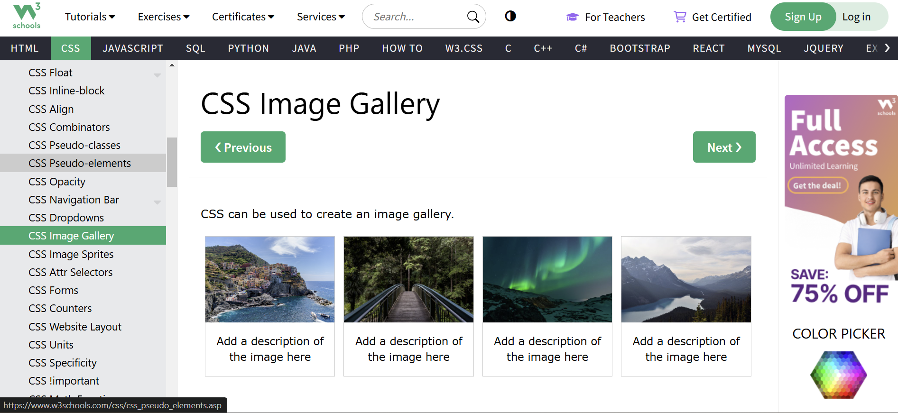

Project 1: Intorduction to 3D Printing
January 28th, 2025
Project Steps
- Download and install PrusaSlicer
- Download and slice name tag design
- Set up 3D printer and print name tag base
- Load second filament color and finish name tag print
- Find an open source torture test
- Download, adjust, and print torture test
- Build website using Bootstrap and Sublime Text
- Laund website using Github
- Reflect on the project

Name tag file and settings
First Tag
The name tag printing went relatively smooth, however the print did not pause after the base was complete to change the filament and finish the rest of the design. As seen below the entire tag was printed in black, making the name itself difficult to see. I had walked away from the print assuming that it would stop at the intended point. Why the program did not stop I am still unsure, but it may have something to do with the information that the 3MF file stored in comparison to what an stl file would have. At the time I thought that perhaps someone else had bumped the machine while it was printing and disrupted its flow, therefore I decided to run the print a second time.
Introduction and Overview
For the first project of the semester the goal was to become comfortable using the Prusa MINI+ 3D Printer and to become familiar with the PrusaSlicer. This was achieved by printing a simple name tag from a preexisting design file, and learning how to adjust the settings for the printer to run smoothly. Then printing the tag with a different color filament for the name. Once this was achieved, the limitations of the printer were explored using a ‘torture test’ or calibration test from an open source file. This process included once again adjusting the setting and configuration of the design in PrusaSlicer. Then running the test, which in this case failed part way through as expected. Lastly, using Bootstrap website templates and Sublime Text together, a website was designed and coded to display this project’s documentation. The process and results of this project can be seen below, including a reflection on what went wrong, why and what was learned from this trial and error.
Name Tag Prints
Once PrusaSlicer was downloaded and set up, a predesigned name tag 3MF file was provided. The settings for this print needed to be adjusted to match the printer's settings. The nozzle on the printer is 0.4 mm so the filament had to match this size, and the speed needed to be set to 0.20 mm speed in PrusaSlicer. These settings allowed for the print to run smoothly, and lay the filament at the right speed to allow the tag to stick to the base and build upon it, and to avoid gaps or stringy lines of filament. Once this was done the 3MF file was exported to a thumb drive and put into the printer. The printer I worked with had filament preloaded into it, but I chose to change the color of my tag base to black, so I unloaded the original one and reloaded the new one after cutting it at a 45 degree angle to ensure it would go in easily. Then I ran a purge to get rid of the excess filament at the tip. This took two rounds of purging before the color came out purely black. Next I selected my name tag file and began the print.
Second Tag
The second print was marginally more successful than the first. I made sure to stay by the printer to see if the program would pause to load the second filament, or if the file had a problem. It turned out that I had to physically pause the printer once the tag base was complete. Why this happened is still a bit of a mystery to me since the file and process I used was the same that others in the class did. Nevertheless, the filament color was changed and the extra was purged twice once again to get a purely gold color. However, this time the extra filament from the purge was not removed from the nozzle entirely so an excess glob was affixed to the tag. My professor helped me try to remove the excess while the printer was running (not the safest technique), but was ultimately unsuccessful. The final result was overall successful even with the few hitches and produced a two colored name tag.
Name tag file and settings
First Tag
The name tag printing went relatively smooth, however the print did not pause after the base was complete to change the filament and finish the rest of the design. As seen below the entire tag was printed in black, making the name itself difficult to see. I had walked away from the print assuming that it would stop at the intended point. Why the program did not stop I am still unsure, but it may have something to do with the information that the 3MF file stored in comparison to what an stl file would have. At the time I thought that perhaps someone else had bumped the machine while it was printing and disrupted its flow, therefore I decided to run the print a second time.

Base layers of the name tag
Base of the name tag

Final name tag
Second Tag
The second print was marginally more successful than the first. I made sure to stay by the printer to see if the program would pause to load the second filament, or if the file had a problem. It turned out that I had to physically pause the printer once the tag base was complete. Why this happened is still a bit of a mystery to me since the file and process I used was the same that others in the class did. Nevertheless, the filament color was changed and the extra was purged twice once again to get a purely gold color. However, this time the extra filament from the purge was not removed from the nozzle entirely so an excess glob was affixed to the tag. My professor helped me try to remove the excess while the printer was running (not the safest technique), but was ultimately unsuccessful. The final result was overall successful even with the few hitches and produced a two colored name tag.

Second name tag base and extra filament

Final name tag
Torture Test
The next step in the project was to test the bounds of the Prusa MINI+ 3D printers abilities. I looked through a couple different open source sites for 3D design files, including https://www.thingiverse.com/ and https://thangs.com/?sort=trending. I searched for torture tests and settled on a model of an Ancient Greek triremehttps://www.thingiverse.com/thing:2899487. This file initially had the boat configured to print from the tip of the boat as pictured below and was too large for the printer’s size. In PrusaSlicer I shrunk the object, adjusted the configuration and sunk the base of the boat below the surface of the printing board to ensure that the print would stick and not immediately slug the machine. Once I went to slice the design I received a couple of warnings about the feasibility of the print, a sign I was on the right path for testing the capability of the printer.

Trireme original configuration

Adjusted trireme
Print warnings
Trireme Printing
The printer was set up with the torture test file and the print began with a solid base and had no problems sticking initially since I had adjusted the base earlier. This is where the success ends. The print was projected to take two hours to complete, about 20 minutes into the print I had to leave, and when I returned the next day the trireme had printed partially before the smaller details became too stringy. A couple spots had begun to burn slightly and were removed once this started. This test did exactly what it was set up to do. It failed but later than expected, pushing the printer to the limits of ability. The biggest challenge of this design was the very thin unsupported details. I intentionally did not add supports to aid the design to observe what would happen, and this resulted in a stringy mess.

Trireme base printing

Final trireme torture test
Building the Website

Simple side bar template preview
To create this website a couple different open source tools were used in conjunction with each other. Bootstrap templates (https://startbootstrap.com/previews/simple-sidebar), Sublime Text, and Github helped me to create and launch this website with relatively few previous skills. The first step was to choose a template and set up my tools. I browsed a couple different templates beginning with just a blank one, however building out this template using CSS coding in Sublime Text would have been greatly time consuming. The other contenders were a blog style website and a simple sidebar style, the latter of which I chose. This allowed me to organize my projects most efficiently in one site, and to work off a previously established code. With relatively little coding experience this was the best option.
Simple side bar template preview
Coding Challenges
The process of creating my own website had many challenges along the way. Initially getting used to Sublime Text and CSS coding language was the hardest part. The linkedin learning course by Melanie Panem https://www.linkedin.com/learning/create-a-quick-clean-and-cheap-website-with-bootstrap-templates/your-most-important-content?u=103733490 was incredibly helpful for getting started. In addition to this, using coding ideas from W3 schools was a wonderful resource. I used this website in creating my photo gallery https://www.w3schools.com/css/tryit.asp?filename=trycss_image_gallery , and plan to continue to reference it as the website improves over the semester.
w3 Schools gallery sample code
Navigation Bar
My choice of a side navigation bar posed some issues as well. The first of these was organizational, Professor Rodgers helped me to use multiple html documents for each page of my website, however this meant keeping my folders extra organized. This proved to be difficult, as I tend to be chaotic with my documents and downloads. Once I took the time to organize my folders and documents on my drive and in Sublime Text the process of coding became much easier. The next issue with the navigation bar was linking each html file to the others, this mostly boiled down to matching the code in each document and making sure that the file path was recognized. The biggest challenge of my coding so far has been aligning photos and captions. Something I am still not quite happy with and will be working on in subsequent problems.

Part of navigation bar code, and file organization in Sublime Text
Github Launching
The last step of the project was to launch the website using Github. This proved to be less difficult than anticipated. Others in the class struggled with Github recognizing their student status, but for some reason I did not have this issue. After downloading the application, a repository for the website had to be created and the project information moved into it. Again my lack of organized files was a bit of a set back, since moving things between folders and finding my assets took time. Once this was sorted, I was able to launch my website through Github with ease.
Concluding Thoughts
This project marked many firsts for me. I had never 3D printed before, used most of the software, or built a website using code before. While I have done some coding, it is certainly still out of my comfort zone. This project presented a lot of learning opportunities because of this. My biggest takeaways are the importance of file organization, and utilizing the availability of public resources where I lack knowledge. I got stuck at a few points and the project would have moved more efficiently if I had taken advantage of these resources earlier. A final note would be to document my process more vigorously, I did not take many notes while struggling with issues which would have been useful for troubleshooting and reflecting on the experience. Nevertheless, I feel that this project was ultimately successful.